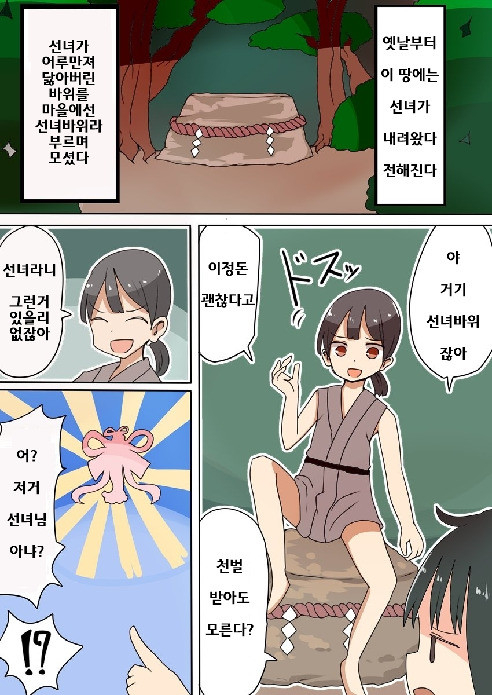
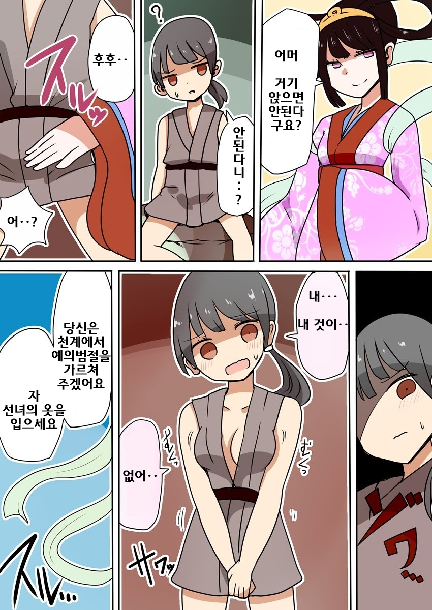
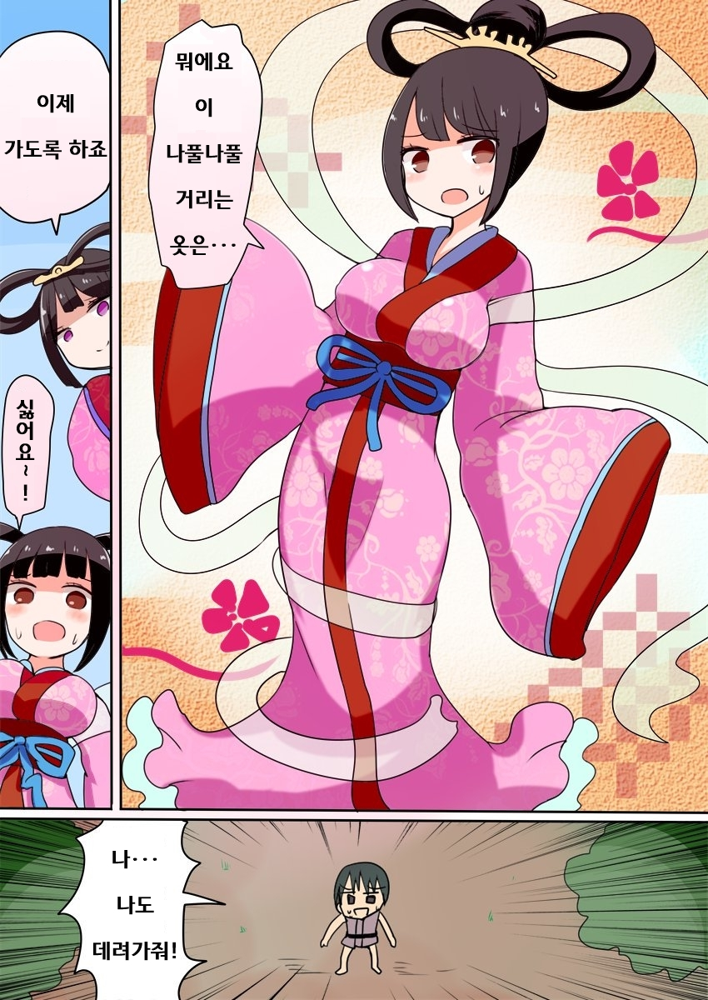
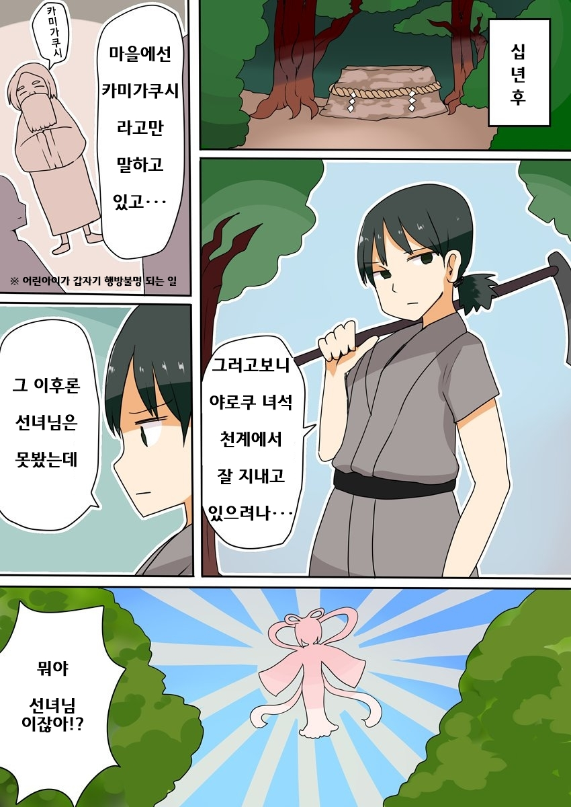
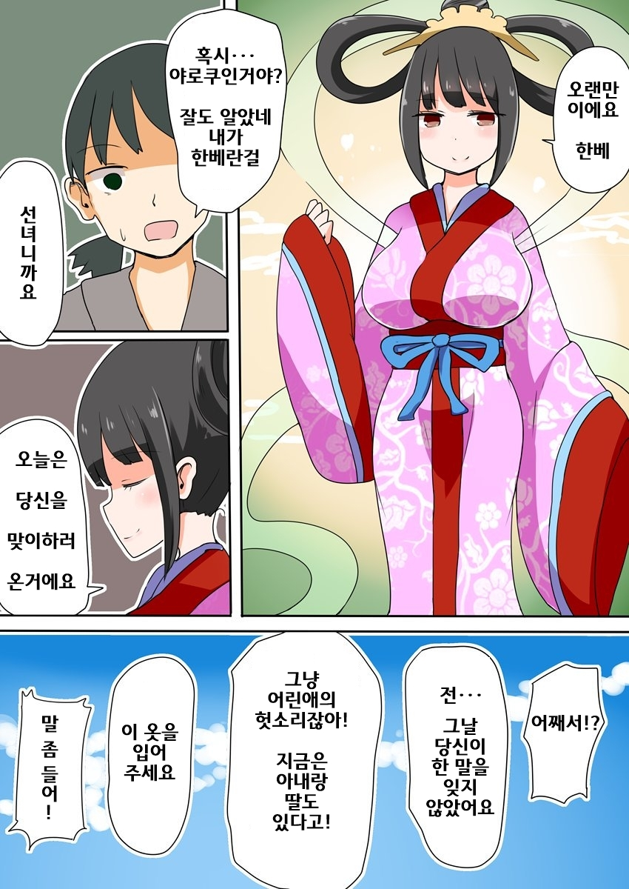
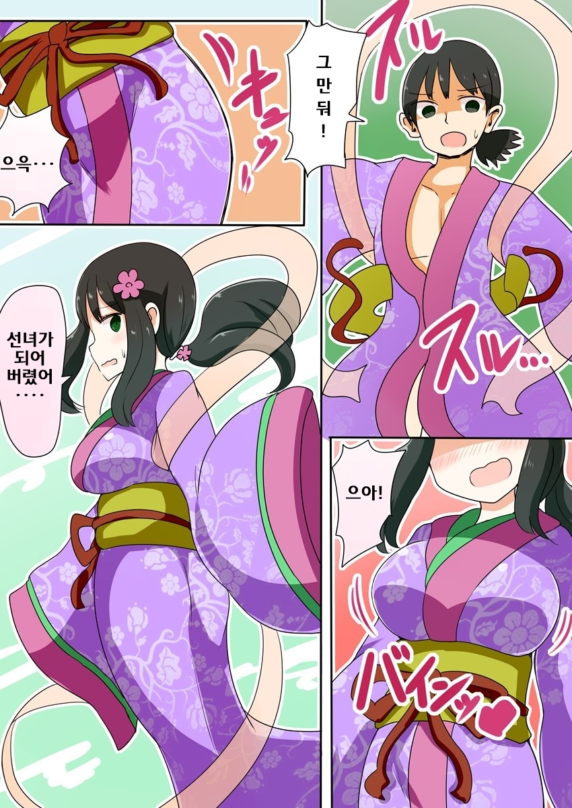
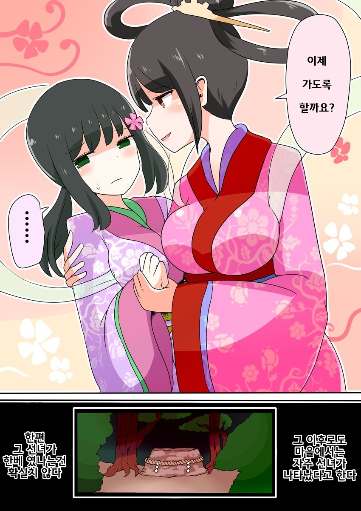

https://www.pixiv.net/artworks/77540693
원본







https://www.pixiv.net/artworks/77540693
원본
댓글
수집 당시 댓글 16개
역설적상호삭용 · 10 시간 전
비크 · 10 시간 전
그 작가군하
꾸구가가 · 7 시간 전
아내와 딸은 뭔 죄야 ㅋㅋㅋ
· 상냥퍼리소녀 · 1 시간 전
보추는 남자한테 양보해야지 가로챈죄
· 김츼 · 1 시간 전
보통 이런건 급하게 떠올린 변명임
· 심심한사람여기붙어라 · 1 시간 전
널 너무나 많이 사랑한 죄
dENEb · 5 시간 전
역/식 린멜
악질틀딱히틀딱 · 2 시간 전
미녀와야스 · 2 시간 전
장트러블맨 · 2 시간 전
vae
星間나그네 · 1 시간 전
레콩키스타 · 1 시간 전
공포잖아........
오늘도야근이다 · 1 시간 전
애딸린 유부남을 납치하네 ...
q1w2e3r4t5 · 1 시간 전
히토미검색 작가이름 vae
스피키 · 1 시간 전
가끔은정줄을놓자 · 1 시간 전
결국 이유를 알 수 없는 행방불명이 개 많았다는 거 아님?
치안 ㄷㄷㄷㄷㄷㄷ